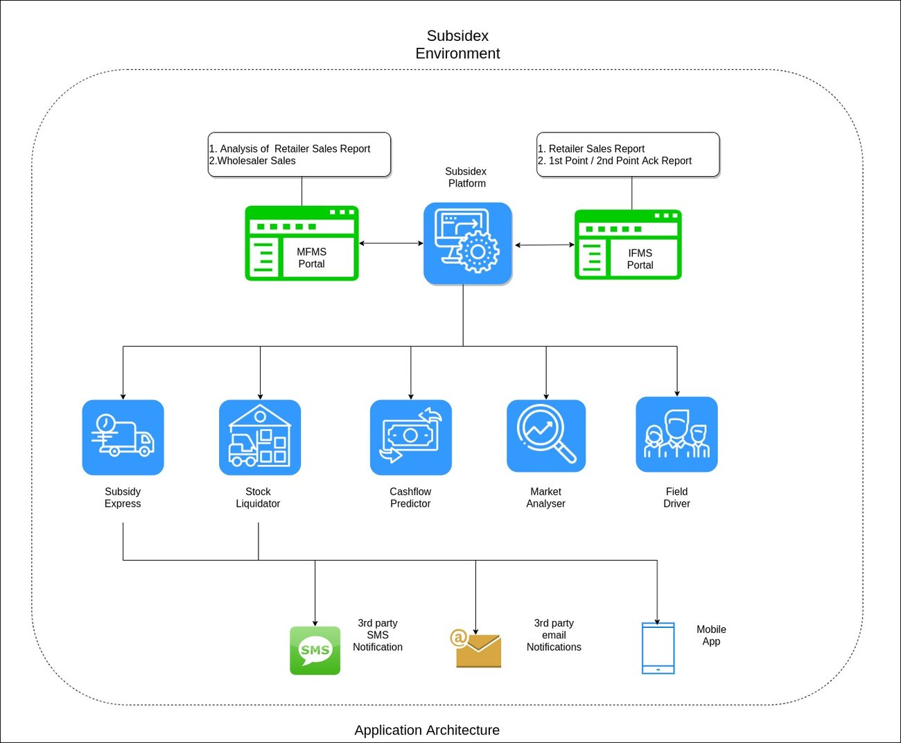
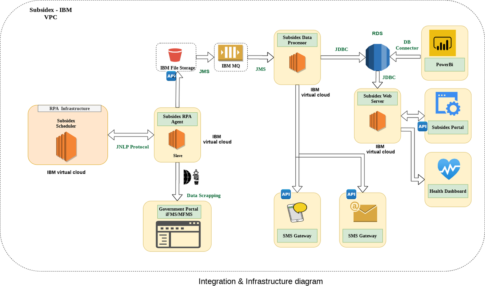
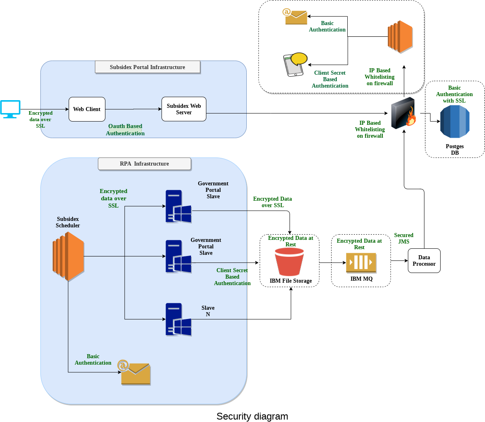
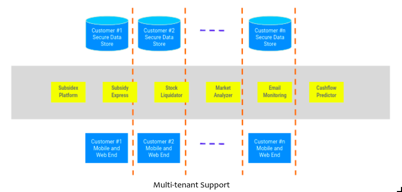

A multi-tenant SaaS platform I architected to automate India's fertilizer subsidy claims chain — replacing manual government-portal reconciliation with RPA-driven data capture, real-time stakeholder nudges, and role-based analytics.
The Problem
India's fertilizer subsidy is paid by the government directly to manufacturers, but only once every handover in the plant → rake point → wholesaler → retailer → farmer chain is acknowledged on a government portal. DBT stretched that reconciliation cycle from under 30 days to 120+, and the entire process was still being run by hand.
The government portal updates constantly, but companies were only pulling it weekly or fortnightly.
MIS teams hand-downloaded reports and rebuilt pending-acknowledgement lists in Excel — every step open to error.
By the time a nudge reached a wholesaler or retailer, the numbers behind it were already out of date.
Objectives
I framed the business case around three outcomes, then translated each into architectural commitments before writing a line of the design.
Cut the subsidy claims cycle by driving faster stock-receipt acknowledgements and surfacing long-standing inventory for liquidation.
Automate the repetitive admin work field officers were doing so their time goes back into direct selling.
Turn the same portal data into production planning, sales strategy, and competitive insight for the manufacturer.
Baseline — Before Subsidex
Most companies had no software here at all — MIS teams manually pulled government data weekly or fortnightly and curated it in spreadsheets to decide what the field force should chase next.
Manual download from the Govt. portal, weekly or fortnightly.
Consolidated by hand or in Excel into a pending-action list.
Actionables emailed out to the field force.
Errors and staleness compounding at every cycle.
Proposed Solution
The full module map — from RPA capture at the edge through to the analytics layer the business teams actually live in.

Hosted end-to-end on IBM Cloud infrastructure.

Subsidex is hosted and managed on IBM infrastructure as a cloud service.
The Scheduler stays connected to the RPA agent over JNLP; scraping jobs run on independent slave servers.
Files the RPA agent extracts are pushed to IBM file storage via the IBM SDK's REST API.
That upload fires an event that publishes a message onto IBM MQ via JMS.
The Data Processor is subscribed to that queue and pulls the matching file back down on arrival.
The processor validates, maps, and cleans the data, persisting it into Postgres via JDBC, per-tenant schema.
The same processor pushes the relevant data out over SMS and email via third-party APIs.
The portal client calls the web server for anything a user needs on screen.
The analytics dashboard reads straight from the relevant DB schemas through DB connectors.
Dashboards themselves are built on Microsoft Power BI.
A custom Selenium-based framework, config-driven rather than script-per-portal.
Every download job is defined via configuration, not custom code per source.
Failure detection and auto-retry are first-class, not bolted on.
Designed to absorb the Govt. portal's downtime and change velocity.
Third-party API integration to publish alerts to stakeholders.
Third-party provider for stakeholder email delivery.
Automated third-party captcha solving on portal login.
Read receipts, bounces, and delivery status tracking.
Security & Compliance


Business Value
Lower working capital pressure from a shorter subsidy claims cycle.
Field staff spend less time on admin — stock acks and PoS liquidation drive themselves.
Automation of critical steps for near-100% accuracy and consistency.
Big-data consolidation from the Govt. portal for supply-chain and competitor visibility.
A real communication channel across every stakeholder in the value chain.
Better process and data management across previously disconnected systems.
Reporting that used to take days, available on demand.
Platform Suite
Subsidex grew from a single claims-automation engine into a full working-capital and subsidy-claims product suite — a decision-support system built by consolidating the Big Data sitting on Govt. portals.
The decision-support layer — RPA capture, processing, and analytics over consolidated Govt.-portal data.
Assesses channel-partner quality on liquidation patterns, stocking behaviour, acknowledgement cycles, and micro-market counter share.
Quicker subsidy claims through faster, automated acknowledgements at every handover.
A no-code mobility solution for field force and territory managers to plan, manage, and track daily activity.
A proprietary algorithm that flags dealers hoarding stock and drives wholesaler and PoS liquidation.
A mobile dealer-connect app that gives channel partners a direct line to companies and field officers.
Proven Results
Beyond the architecture, these are the outcomes Subsidex was tracked against in production — the numbers that justified the build.
Reduction in the subsidy claims cycle translated to cost savings of roughly ₹15 crore.
Retailers holding stock for more than 30 days fell by roughly 50% after rollout.
Automating administrative tasks freed up field officers' time for selling and engagement instead of paperwork.
Document Credentials
This architecture note wasn't written once — it was pressure-tested and revised as the design matured, each version reviewed by a peer engineer before it shipped.
Baseline architecture — foundational module map, integration layer, and data flow.
Reviewed by Irshad ChohanIntroduced schema-level tenant isolation — each client gets a dedicated schema provisioned on onboarding.
Reviewed by Onkar PradhanHardened encryption, OAuth token scoping, and VPC design — the final production-ready revision.
Reviewed by Onkar PradhanSubsidex · Platform Architecture Case Study
Dhruvi Chauhan
Business Analyst, Neebal Technologies